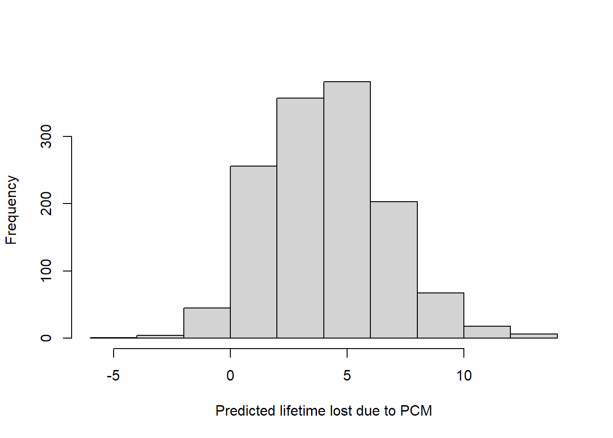

In this lesson you will
Library the survival package and then the eventglm package. We will use some commands from survival to make sense of what is going on in the regression models.
library(survival)
library(eventglm)Our next example involves the mgus2 dataset, included in the package:
## ?mgus2
head(mgus2)## id age sex dxyr hgb creat mspike ptime pstat futime death etime event
## 1 1 88 F 1981 13.1 1.3 0.5 30 0 30 1 30 death
## 2 2 78 F 1968 11.5 1.2 2.0 25 0 25 1 25 death
## 3 3 94 M 1980 10.5 1.5 2.6 46 0 46 1 46 death
## 4 4 68 M 1977 15.2 1.2 1.2 92 0 92 1 92 death
## 5 5 90 F 1973 10.7 0.8 1.0 8 0 8 1 8 death
## 6 6 90 M 1990 12.9 1.0 0.5 4 0 4 1 4 deathThis dataset has a number of covariates, and the time until progression to plasma cell malignancy (PCM), or death. Here the event PCM is of primary interest, with death being a competing event. The data are described and analyzed in the survival vignette (section 2.3.2):
crfit <- survfit(Surv(etime, event) ~ sex, eventglm::mgus2)
summary(crfit, times = 120)## Call: survfit(formula = Surv(etime, event) ~ sex, data = eventglm::mgus2)
##
## sex=F
## time n.risk n.event P((s0)) P(pcm) P(death)
## 120.0000 214.0000 331.0000 0.4456 0.0739 0.4805
##
## sex=M
## time n.risk n.event P((s0)) P(pcm) P(death)
## 120.0000 210.0000 450.0000 0.3695 0.0553 0.5752print(crfit, rmean = 120)## Call: survfit(formula = Surv(etime, event) ~ sex, data = eventglm::mgus2)
##
## n nevent rmean*
## sex=F, (s0) 631 0 82.983485
## sex=M, (s0) 753 0 74.808346
## sex=F, pcm 631 59 4.794595
## sex=M, pcm 753 56 3.501305
## sex=F, death 631 370 32.221921
## sex=M, death 753 490 41.690349
## *mean time in state, restricted (max time = 120 )plot(crfit, col=1:2, noplot="",
lty=c(3,3,2,2,1,1), lwd=2, xscale=12,
xlab="Years post diagnosis", ylab="P(state)")
legend(240, .65, c("Female, death", "Male, death", "malignancy", "(s0)"),
lty=c(1,1,2,3), col=c(1,2,1,1), bty='n', lwd=2)
abline(v = 120, lty = 2)This is the competing risks setting, which can be described with the multi-state model in the figure below.
connect <- matrix(0, nrow = 3, ncol = 3,
dimnames = lapply(1:2, \(i) c("MGUS", "PCM", "Death")))
connect[1, 2:3] <- 1
statefig(c(1, 2), connect)We can get similar estimates for the cumulative incidence of pcm at 10 years and the expected lifetime lost due to pcm up to 10 years with similar commands as above. Note the cause option to specify the cause of interest.
mgfitci <- cumincglm(Surv(etime, event) ~ sex, cause = "pcm",
time = 120, data = mgus2)
summary(mgfitci)##
## Call:
## cumincglm(formula = Surv(etime, event) ~ sex, time = 120, cause = "pcm",
## data = mgus2)
##
## Deviance Residuals:
## Min 1Q Median 3Q Max
## -0.08163 -0.07447 -0.06306 -0.05536 1.23923
##
## Coefficients:
## Estimate Std. Error z value Pr(>|z|)
## (Intercept) 0.07383 0.01086 6.800 1.04e-11 ***
## sexM -0.01857 0.01384 -1.342 0.18
## ---
## Signif. codes: 0 '***' 0.001 '**' 0.01 '*' 0.05 '.' 0.1 ' ' 1
##
## (Dispersion parameter for quasi family taken to be 1)
##
## Null deviance: 88.507 on 1383 degrees of freedom
## Residual deviance: 88.388 on 1382 degrees of freedom
## AIC: NA
##
## Number of Fisher Scoring iterations: 2mgfitrmean <- rmeanglm(Surv(etime, event) ~ sex, cause = "pcm",
time = 120, data = mgus2)
summary(mgfitrmean)##
## Call:
## rmeanglm(formula = Surv(etime, event) ~ sex, time = 120, cause = "pcm",
## data = mgus2)
##
## Deviance Residuals:
## Min 1Q Median 3Q Max
## -4.971 -4.863 -3.678 -3.508 113.292
##
## Coefficients:
## Estimate Std. Error z value Pr(>|z|)
## (Intercept) 4.7926 0.7883 6.080 1.2e-09 ***
## sexM -1.2929 0.9902 -1.306 0.192
## ---
## Signif. codes: 0 '***' 0.001 '**' 0.01 '*' 0.05 '.' 0.1 ' ' 1
##
## (Dispersion parameter for quasi family taken to be 1)
##
## Null deviance: 450225 on 1383 degrees of freedom
## Residual deviance: 449652 on 1382 degrees of freedom
## AIC: NA
##
## Number of Fisher Scoring iterations: 2This time the models are \[ P(T \leq 120 \mbox{ and } \delta = \mbox{PCM} | \mbox{sex}) = \beta_0 + \beta_1 I(sex = "M") \] for the cause specific cumulative incidence, and \[ E((120 - T \wedge 120)I(\delta = \mbox{PCM}) | \mbox{sex}) = \beta_0 + \beta_1 I(sex = "M") \] for the second model. The latter is interpreted as the expected lifetime lost due to PCM up to 120 months. See Andersen (2013) for more details on this quantity.
Look at the mgus2 dataset, summarize the variables in the data, and read the help file for mgus2 in the eventglm documentation. Then specify and fit a regression model to answer a particular scientific question for this dataset. Interpret the relevant coefficients from the model.
summary(mgus2)## id age sex dxyr hgb
## Min. : 1.0 Min. :24.00 F:631 Min. :1960 Min. : 5.7
## 1st Qu.: 346.8 1st Qu.:63.00 M:753 1st Qu.:1980 1st Qu.:12.2
## Median : 692.5 Median :72.00 Median :1984 Median :13.5
## Mean : 692.5 Mean :70.42 Mean :1983 Mean :13.3
## 3rd Qu.:1038.2 3rd Qu.:79.00 3rd Qu.:1988 3rd Qu.:14.7
## Max. :1384.0 Max. :96.00 Max. :1994 Max. :18.9
## NA's :13
## creat mspike ptime pstat
## Min. : 0.400 Min. :0.000 Min. : 1.00 Min. :0.00000
## 1st Qu.: 0.900 1st Qu.:0.600 1st Qu.: 37.00 1st Qu.:0.00000
## Median : 1.100 Median :1.200 Median : 81.00 Median :0.00000
## Mean : 1.292 Mean :1.164 Mean : 93.54 Mean :0.08309
## 3rd Qu.: 1.300 3rd Qu.:1.500 3rd Qu.:136.25 3rd Qu.:0.00000
## Max. :22.000 Max. :3.000 Max. :424.00 Max. :1.00000
## NA's :30 NA's :11
## futime death etime event
## Min. : 1.0 Min. :0.0000 Min. : 1.00 censor:409
## 1st Qu.: 40.0 1st Qu.:0.0000 1st Qu.: 37.00 pcm :115
## Median : 84.0 Median :1.0000 Median : 81.00 death :860
## Mean : 95.8 Mean :0.6958 Mean : 93.54
## 3rd Qu.:139.0 3rd Qu.:1.0000 3rd Qu.:136.25
## Max. :424.0 Max. :1.0000 Max. :424.00
## The purpose of this study was to determine whether there are any reliable predictors of progression to malignancy.
mgfitci2 <- cumincglm(Surv(etime, event) ~ sex + age + hgb + creat + mspike,
cause = "pcm",
time = 120, data = mgus2)
summary(mgfitci2)##
## Call:
## cumincglm(formula = Surv(etime, event) ~ sex + age + hgb + creat +
## mspike, time = 120, cause = "pcm", data = mgus2)
##
## Deviance Residuals:
## Min 1Q Median 3Q Max
## -0.18803 -0.08596 -0.06097 -0.03109 1.19792
##
## Coefficients:
## Estimate Std. Error z value Pr(>|z|)
## (Intercept) 3.930e-02 6.295e-02 0.624 0.53238
## sexM -1.443e-02 1.417e-02 -1.019 0.30841
## age -3.672e-05 4.500e-04 -0.082 0.93496
## hgb -1.554e-03 3.516e-03 -0.442 0.65840
## creat -7.625e-03 2.878e-03 -2.649 0.00807 **
## mspike 5.685e-02 1.427e-02 3.983 6.81e-05 ***
## ---
## Signif. codes: 0 '***' 0.001 '**' 0.01 '*' 0.05 '.' 0.1 ' ' 1
##
## (Dispersion parameter for quasi family taken to be 1)
##
## Null deviance: 86.385 on 1337 degrees of freedom
## Residual deviance: 84.738 on 1332 degrees of freedom
## (46 observations deleted due to missingness)
## AIC: NA
##
## Number of Fisher Scoring iterations: 2mgfitrmean2 <- rmeanglm(Surv(etime, event) ~ sex + age + hgb + creat + mspike,
cause = "pcm",
time = 120, data = mgus2)
summary(mgfitrmean2)##
## Call:
## rmeanglm(formula = Surv(etime, event) ~ sex + age + hgb + creat +
## mspike, time = 120, cause = "pcm", data = mgus2)
##
## Deviance Residuals:
## Min 1Q Median 3Q Max
## -13.738 -5.580 -3.688 -1.748 111.199
##
## Coefficients:
## Estimate Std. Error z value Pr(>|z|)
## (Intercept) 1.40587 4.45719 0.315 0.752446
## sexM -0.87102 0.99635 -0.874 0.382005
## age 0.03851 0.03034 1.269 0.204405
## hgb -0.27601 0.27655 -0.998 0.318256
## creat -0.41408 0.21143 -1.958 0.050176 .
## mspike 4.03216 1.10280 3.656 0.000256 ***
## ---
## Signif. codes: 0 '***' 0.001 '**' 0.01 '*' 0.05 '.' 0.1 ' ' 1
##
## (Dispersion parameter for quasi family taken to be 1)
##
## Null deviance: 438200 on 1337 degrees of freedom
## Residual deviance: 429463 on 1332 degrees of freedom
## (46 observations deleted due to missingness)
## AIC: NA
##
## Number of Fisher Scoring iterations: 2The size of the monoclonal serum spike appears to be an independent predictor of the risk of pcm within 10 years, with a 5.7% higher risk for each unit increase in mspike, adjusted for creatinine, hemoglobin, age and sex. Likewise, a unit increase in mspike is associated with an expected 4 months lifetime lost due to PCM, adjusted for the other variables.
The objects returned by cumincglm and rmeanglm inherit from glm, so many methods are available, including predict and resid. Residuals use the scaling factor suggested by Perme and Andersen (2008), as do predictions. Predicted restricted means give a possible method to predict individual event times, while the predicted cumulative incidence should be probabilities. Note that with the identity link, the predicted cumulative incidence is not guaranteed to be between 0 and 1.
hist(predict(mgfitrmean2, newdata = mgus2),
xlab = "Predicted lifetime lost due to PCM", main = "")
mgus2$prob.pcm10 <- predict(mgfitci2, newdata = mgus2)
mgus2$pseudo.ci <- mgfitci$y
summary(mgus2$prob.pcm10)## Min. 1st Qu. Median Mean 3rd Qu. Max. NA's
## -0.09178 0.03774 0.06411 0.06423 0.08706 0.18443 46cutps <- quantile(mgus2$prob.pcm10, seq(.1, .9, by = .1), na.rm = TRUE)
mgus2$prob.cut <- cut(mgus2$prob.pcm10,
cutps)
pred.p <- cutps[-length(cutps)] + diff(cutps)
obs.p <- c(by(mgus2$pseudo.ci, mgus2$prob.cut, mean))
plot(obs.p ~ pred.p, xlab = "predicted 10 year risk", ylab = "observed 10 year risk")
abline(0, 1)You can specify a vector of times in cumincglm to get a model that assumes the effect of the covariate is constant over those times. Let’s see how this works in the colon example.
mvtfit1 <- cumincglm(Surv(time, status) ~ rx,
time = c(500, 1000, 1500, 2000, 2500),
data = colon, survival = TRUE)
summary(mvtfit1)##
## Call:
## cumincglm(formula = Surv(time, status) ~ rx, time = c(500, 1000,
## 1500, 2000, 2500), data = colon, survival = TRUE)
##
## Deviance Residuals:
## Min 1Q Median 3Q Max
##
##
## Coefficients:
## Estimate Std. Error z value Pr(>|z|)
## (Intercept) 0.829127 0.021793 38.046 < 2e-16 ***
## factor(pseudo.time)1000 -0.170283 0.012340 -13.800 < 2e-16 ***
## factor(pseudo.time)1500 -0.263039 0.014456 -18.196 < 2e-16 ***
## factor(pseudo.time)2000 -0.314852 0.015290 -20.592 < 2e-16 ***
## factor(pseudo.time)2500 -0.351750 0.016423 -21.419 < 2e-16 ***
## rxLev 0.003942 0.032530 0.121 0.90355
## rxLev+5FU 0.093737 0.031979 2.931 0.00338 **
## ---
## Signif. codes: 0 '***' 0.001 '**' 0.01 '*' 0.05 '.' 0.1 ' ' 1
##
## (Dispersion parameter for quasi family taken to be 1)
##
## Null deviance: 1091.5 on 4644 degrees of freedom
## Residual deviance: 1009.4 on 4638 degrees of freedom
## AIC: NA
##
## Number of Fisher Scoring iterations: 2This fits the model (in general terms) \[g\{P(T_i < t_b| X_i = x_i)\} = (\beta_0 + \beta_b) + \beta_1x_i, b = 1, \ldots, k.\]
In this model, the intercept is the survival probability in the Obs arm at time 500 (the reference time). The terms labeled factor(pseudo.time)t represent the change in the intercept associated with the time t. So, for example, the survival probability in the Obs arm at time 1000 is 0.83 + -0.17 = 0.66.
Looking at the survival curves in previous lesson, the assumption of a constant treatment effect on the survival difference scale may be questionable. We can allow covariate effects to be time dependent by wrapping them in the special term tve() in the right side of the formula.
mvtfit2 <- cumincglm(Surv(time, status) ~ tve(rx),
time = c(500, 1000, 1500, 2000, 2500),
data = colon, survival = TRUE)
summary(mvtfit2)##
## Call:
## cumincglm(formula = Surv(time, status) ~ tve(rx), time = c(500,
## 1000, 1500, 2000, 2500), data = colon, survival = TRUE)
##
## Deviance Residuals:
## Min 1Q Median 3Q Max
##
##
## Coefficients:
## Estimate Std. Error z value Pr(>|z|)
## (Intercept) 0.850710 0.020078 42.370 < 2e-16 ***
## factor(pseudo.time)1000 -0.178401 0.021560 -8.275 < 2e-16 ***
## factor(pseudo.time)1500 -0.289898 0.025561 -11.341 < 2e-16 ***
## factor(pseudo.time)2000 -0.345379 0.026875 -12.851 < 2e-16 ***
## factor(pseudo.time)2500 -0.394161 0.028857 -13.659 < 2e-16 ***
## factor(pseudo.time)500:rxLev 0.004138 0.028347 0.146 0.88395
## factor(pseudo.time)1000:rxLev -0.017500 0.037805 -0.463 0.64343
## factor(pseudo.time)1500:rxLev -0.002754 0.039739 -0.069 0.94474
## factor(pseudo.time)2000:rxLev 0.006751 0.040132 0.168 0.86641
## factor(pseudo.time)2500:rxLev 0.029075 0.041596 0.699 0.48456
## factor(pseudo.time)500:rxLev+5FU 0.027581 0.027476 1.004 0.31546
## factor(pseudo.time)1000:rxLev+5FU 0.074455 0.036360 2.048 0.04059 *
## factor(pseudo.time)1500:rxLev+5FU 0.116689 0.038753 3.011 0.00260 **
## factor(pseudo.time)2000:rxLev+5FU 0.118203 0.039667 2.980 0.00288 **
## factor(pseudo.time)2500:rxLev+5FU 0.131758 0.041722 3.158 0.00159 **
## ---
## Signif. codes: 0 '***' 0.001 '**' 0.01 '*' 0.05 '.' 0.1 ' ' 1
##
## (Dispersion parameter for quasi family taken to be 1)
##
## Null deviance: 1091.5 on 4644 degrees of freedom
## Residual deviance: 1007.9 on 4630 degrees of freedom
## AIC: NA
##
## Number of Fisher Scoring iterations: 2This fits the model
\[g\{P(T_i < t_b| X_i = x_i)\} = (\beta_0 + \beta_b) + \gamma_b x_i, b = 1, \ldots, k\]
Now the coefficients labeled factor(pseudo.time)t:Covariate represent the covariate effect at time t. So, for example, the difference in survival probabilities of Levamisole plus 5-FU to Observation at time 1500 is
round(summary(mvtfit2)$coefficients[13,, drop = FALSE],2)## Estimate Std. Error z value Pr(>|z|)
## factor(pseudo.time)1500:rxLev+5FU 0.12 0.04 3.01 0Compare with the estimate from survfit:
sfit <- survfit(Surv(time, status) ~ rx, data = colon)
round(summary(sfit, times = 1500)$surv[3] -
summary(sfit, times = 1500)$surv[1], 2)## [1] 0.12The key advantage of the regression approach is that we can adjust for covariates, do inference directly, and have more flexible models. The tve term allows you to have a mix of time-varying and time-constant effects. Just apply it to any covariate that you want to be time-varying.
In the mvtfit2 model, construct a procedure to test the null hypothesis that there is no difference in survival comparing Lev+5FU to the Obs group at any of the 5 times in the model.
The null hypothesis is that the 5 coefficients with the label rxLev+5FU are simultaneously equal to 0. We can test this by doing a Wald test manually using the estimated covariance matrix of the estimated coefficients:
tdex <- grep("rxLev+5FU", names(coef(mvtfit2)), fixed = TRUE)
Wstat <- c(t(coef(mvtfit2)[tdex]) %*%
solve(vcov(mvtfit2)[tdex, tdex]) %*%
coef(mvtfit2)[tdex])
## under the null this is Chisq with 5 degrees of freedom
pchisq(Wstat, df = length(tdex), lower.tail = FALSE)## [1] 0.04408651The cloglog link function stands for “complementary log-log,” and is defined \(g(x) = \log(-\log(1 - x))\). Hence a model for the cumulative incidence with the cloglog link is \[
\log( -\log(1 - P(T \leq t | X))) = \beta_0 + \beta_1 X.
\] Recall that the cumulative hazard \(H(t)\) is related to the survival: \(S(t) = \exp(-H(t))\), so inverting this relationship we get from our model \[
\log(H(t | X)) = \beta_0 + \beta_1 X.
\]
If a proportional hazards Cox model holds then \[ S(t | X) = \exp(- H_0(t) \exp(\gamma X)) \] where \(H_0(t) = H(t | X = 0)\), or equivalently \[ \log(-\log(S(t | X))) = \log(H_0(t)) + \gamma X. \]
Thus fitting a cumincglm model should give us similar results as a Cox model. Let’s try it on the colon dataset.
## dummy variable for the treatment group
colon$rxLev5FU <- 1.0 * (colon$rx == "Lev+5FU")
colon.cll <- cumincglm(Surv(time, status) ~ rxLev5FU, data = colon,
time = 1500, link = "cloglog")
summary(colon.cll)##
## Call:
## cumincglm(formula = Surv(time, status) ~ rxLev5FU, time = 1500,
## link = "cloglog", data = colon)
##
## Deviance Residuals:
## Min 1Q Median 3Q Max
## -0.4411 -0.4411 -0.3230 0.5603 0.6835
##
## Coefficients:
## Estimate Std. Error z value Pr(>|z|)
## (Intercept) -0.54333 0.06124 -8.872 < 2e-16 ***
## rxLev5FU -0.39996 0.11903 -3.360 0.000779 ***
## ---
## Signif. codes: 0 '***' 0.001 '**' 0.01 '*' 0.05 '.' 0.1 ' ' 1
##
## (Dispersion parameter for quasi family taken to be 1)
##
## Null deviance: 223.60 on 928 degrees of freedom
## Residual deviance: 220.75 on 927 degrees of freedom
## AIC: NA
##
## Number of Fisher Scoring iterations: 3colon.cox <- coxph(Surv(time, status) ~ rxLev5FU, data = colon)
summary(colon.cox)## Call:
## coxph(formula = Surv(time, status) ~ rxLev5FU, data = colon)
##
## n= 929, number of events= 452
##
## coef exp(coef) se(coef) z Pr(>|z|)
## rxLev5FU -0.3586 0.6987 0.1058 -3.39 0.000698 ***
## ---
## Signif. codes: 0 '***' 0.001 '**' 0.01 '*' 0.05 '.' 0.1 ' ' 1
##
## exp(coef) exp(-coef) lower .95 upper .95
## rxLev5FU 0.6987 1.431 0.5679 0.8596
##
## Concordance= 0.536 (se = 0.011 )
## Likelihood ratio test= 12.09 on 1 df, p=5e-04
## Wald test = 11.49 on 1 df, p=7e-04
## Score (logrank) test = 11.62 on 1 df, p=7e-04The coefficients are similar, but not that close comparing the two model results.
How are the modeling assumptions different between the two models in the previous code chunk? How can we modify the cumincglm model to get estimates closer to the Cox model?
The key difference is that the cumincglm model is assuming proportional hazards, but only at one time point (1500). We can modify this to a multiple time point model, where we do not want the coefficient to vary in time. If we do allow the coefficient for Lev+5FU to vary in time, then we would get something similar to a Cox model with time varying coefficients.
colon.cll2 <- cumincglm(Surv(time, status) ~ rxLev5FU, data = colon,
time = c(500, 1000, 1500, 2000, 2500), link = "cloglog")
summary(colon.cll2)##
## Call:
## cumincglm(formula = Surv(time, status) ~ rxLev5FU, time = c(500,
## 1000, 1500, 2000, 2500), link = "cloglog", data = colon)
##
## Deviance Residuals:
## Min 1Q Median 3Q Max
## -0.5737 -0.3795 -0.1519 0.5096 2.1118
##
## Coefficients:
## Estimate Std. Error z value Pr(>|z|)
## (Intercept) -1.80376 0.09244 -19.513 < 2e-16 ***
## factor(pseudo.time)1000 0.91633 0.07191 12.742 < 2e-16 ***
## factor(pseudo.time)1500 1.24968 0.07862 15.895 < 2e-16 ***
## factor(pseudo.time)2000 1.41171 0.08106 17.415 < 2e-16 ***
## factor(pseudo.time)2500 1.52184 0.08362 18.200 < 2e-16 ***
## rxLev5FU -0.35686 0.10823 -3.297 0.000977 ***
## ---
## Signif. codes: 0 '***' 0.001 '**' 0.01 '*' 0.05 '.' 0.1 ' ' 1
##
## (Dispersion parameter for quasi family taken to be 1)
##
## Null deviance: 1091.5 on 4644 degrees of freedom
## Residual deviance: 1008.2 on 4639 degrees of freedom
## AIC: NA
##
## Number of Fisher Scoring iterations: 5summary(colon.cox)## Call:
## coxph(formula = Surv(time, status) ~ rxLev5FU, data = colon)
##
## n= 929, number of events= 452
##
## coef exp(coef) se(coef) z Pr(>|z|)
## rxLev5FU -0.3586 0.6987 0.1058 -3.39 0.000698 ***
## ---
## Signif. codes: 0 '***' 0.001 '**' 0.01 '*' 0.05 '.' 0.1 ' ' 1
##
## exp(coef) exp(-coef) lower .95 upper .95
## rxLev5FU 0.6987 1.431 0.5679 0.8596
##
## Concordance= 0.536 (se = 0.011 )
## Likelihood ratio test= 12.09 on 1 df, p=5e-04
## Wald test = 11.49 on 1 df, p=7e-04
## Score (logrank) test = 11.62 on 1 df, p=7e-04coef(colon.cll2)[6]## rxLev5FU
## -0.3568569coef(colon.cox)## rxLev5FU
## -0.3585821